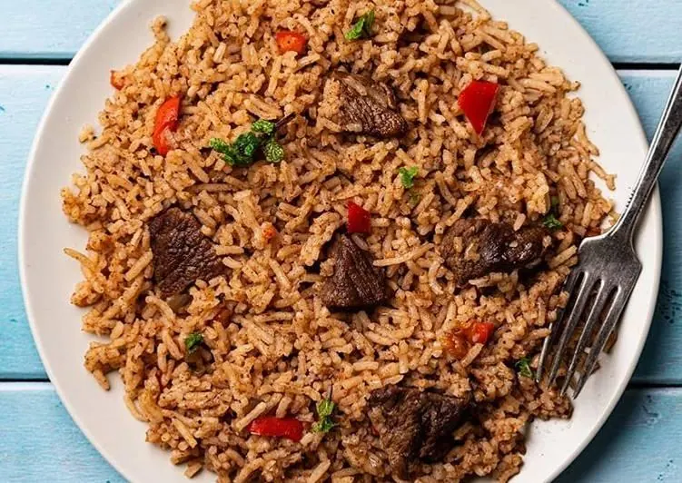
Food
Medium
Pilau
Fragrant spiced rice cooked with tender beef and authentic pilau masala — a Kenyan celebration dish.
Your personal Kenyan chef
Tell Irio what's in your kitchen, it decides what you eat. From pilau to Dawa cocktails, one app covers everything.
What Irio does
Pick what's in your kitchen — even by its Swahili name. Irio matches it against 300+ Kenyan recipes and shows what you can cook right now, plus what you're one ingredient away from.
Generate a 3 to 14-day meal plan in seconds — breakfast, lunch and dinner, no repeats, tuned to your pantry and diet. Then get the shopping list for what's missing.
From masala chai and hot ginger-lemon dawa to fresh juices, mocktails and cocktails — drinks for every mood, occasion and guest list.
Recipe showcase
A taste of what's waiting inside the app.

Fragrant spiced rice cooked with tender beef and authentic pilau masala — a Kenyan celebration dish.
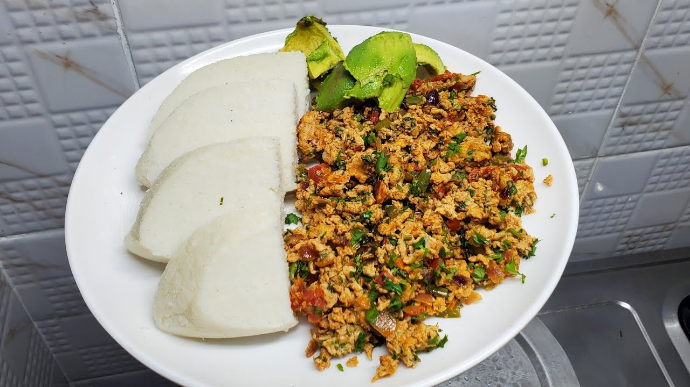
Soft white ugali with eggs scrambled into a quick tomato and onion fry — the cheap, filling everyday classic.
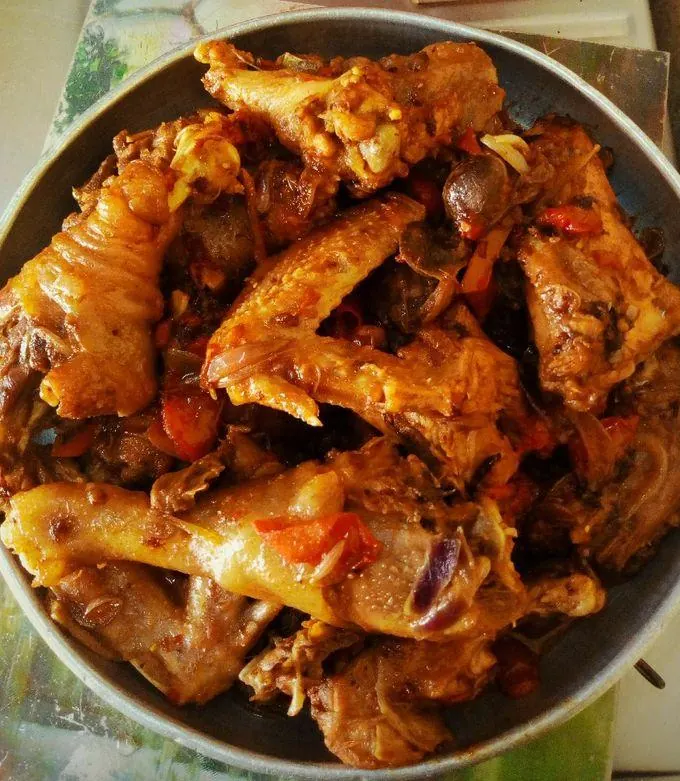
Tender chicken simmered in a rich tomato-onion gravy until the sauce clings to every piece. Best with ugali.
Flaky, layered flatbreads made with all-purpose flour the perfect partner to any Kenyan stew.
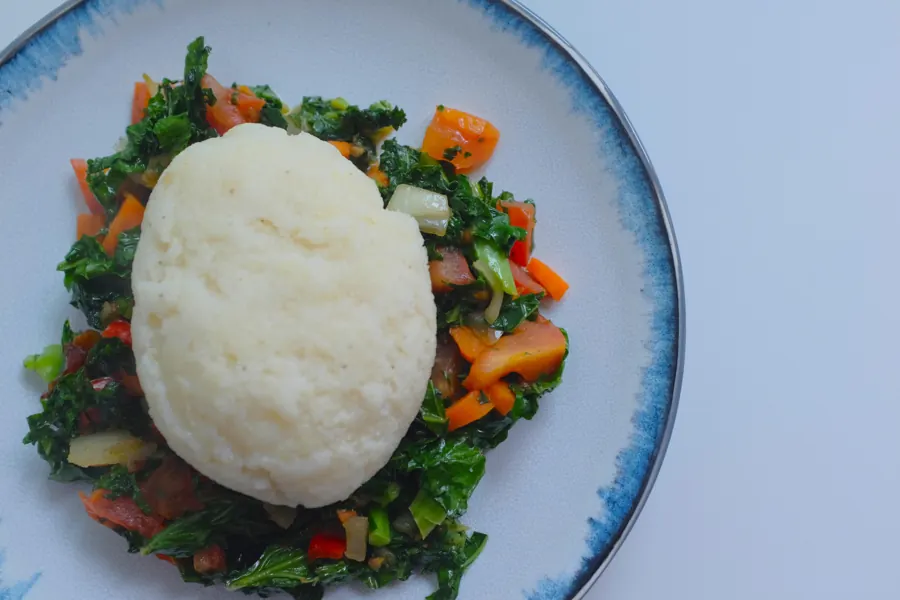
The ultimate Kenyan staple — firm maize meal paired with sautéed kale and onions. Simple and iconic.
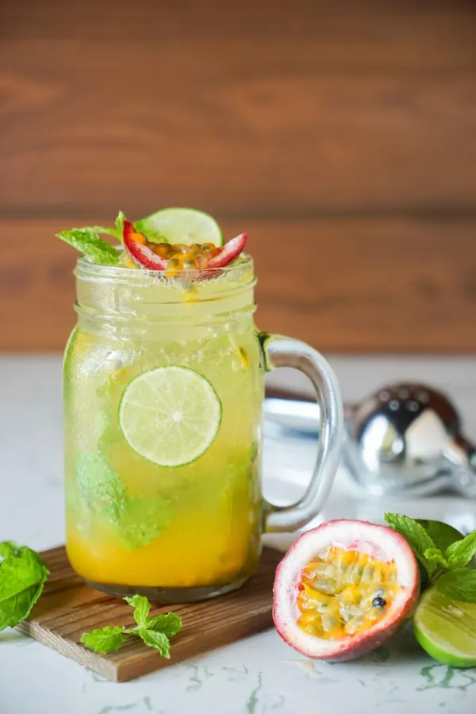
Crushed mint, fresh passion fruit and sparkling water — a refreshing tropical twist on the classic. Zero alcohol.
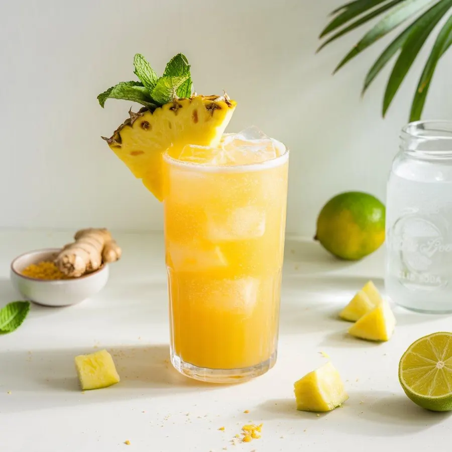
Fresh pineapple juice, ginger syrup and coconut water over crushed ice. A Kenyan party favourite.
Fresh mango blended smooth with mint and topped with sparkling water. Bright, fruity and refreshing.
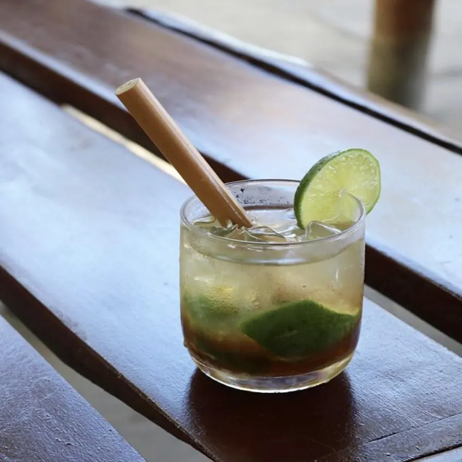
Kenya's beloved cocktail — vodka, lime, honey and crushed ice. Served the authentic way with a honey stick muddler.
White rum, fresh mint, lime juice, sugar and soda. The Cuban classic made perfectly with Irio's step-by-step guide.
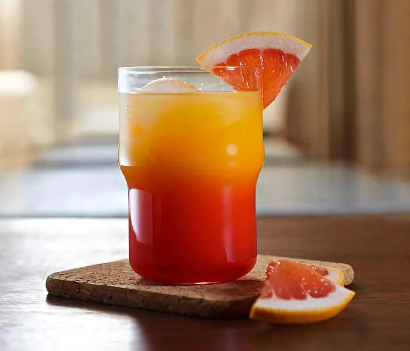
Tequila, fresh orange juice and grenadine — layered for that iconic sunrise gradient. A showstopper in any glass.
Simple by design
Tap what you have from 120 ingredients — search in English or Swahili ("ndengu", "dhania"). Irio remembers your pantry.
Irio matches your pantry against 300+ Kenyan recipes right on your phone — instantly, even offline — and respects your allergies. Nothing fits? Ask the AI chef for a custom recipe.
Step-by-step instructions with built-in countdown timers. Every step tells you exactly what to do and when to wait.
See it in action
Bold, simple and fast — straight from the app.
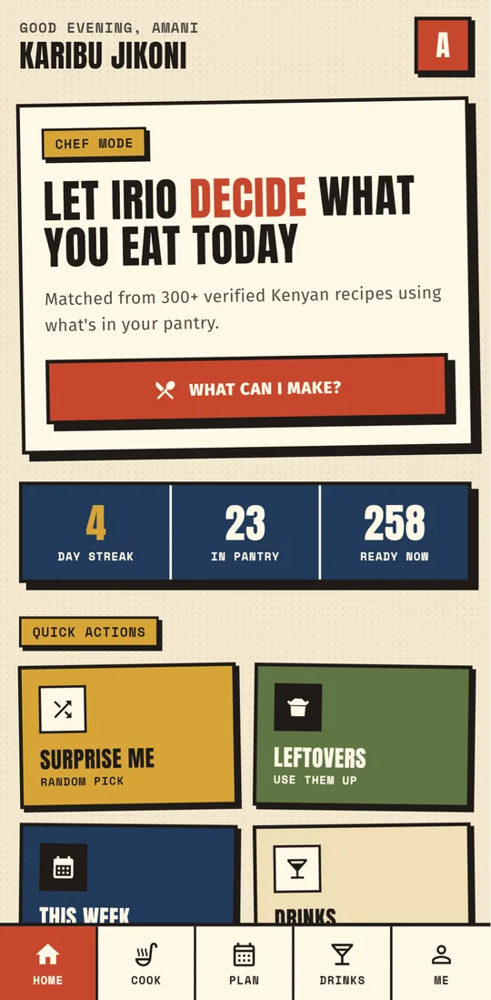
Chef Mode
Let Irio decide tonight
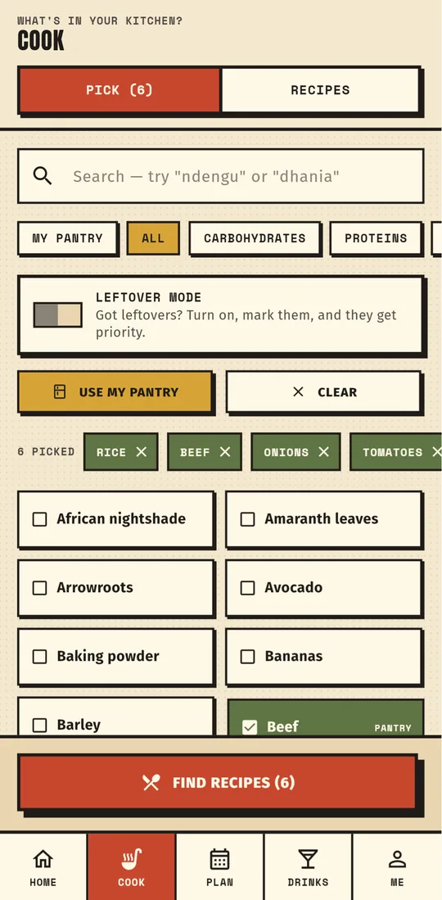
Pick Ingredients
English or Swahili names
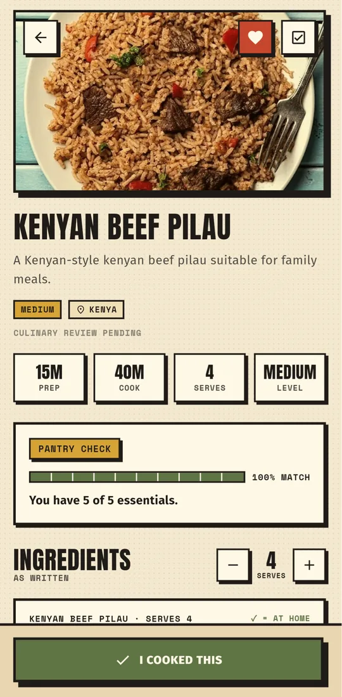
Cook It
Pantry check & step timers
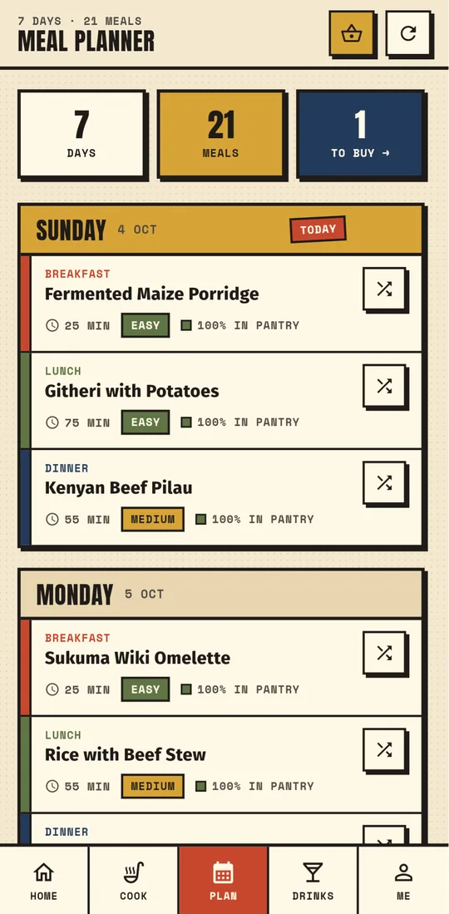
Plan Your Week
Up to 14 days, no repeats
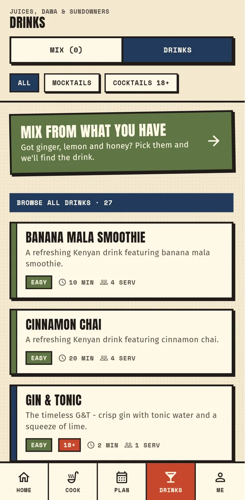
Drinks
Chai, juices & sundowners
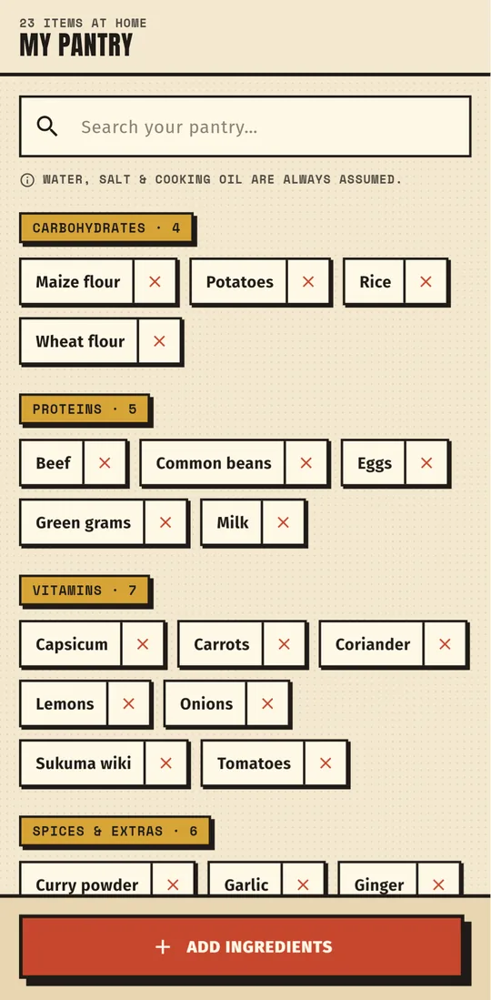
Your Pantry
Sorted by food group
Download now
Free. No subscription. Just great Kenyan food, right on your phone.
Requires Android 7.0 or newer · Allow "Install unknown apps" for your browser when asked · Already have Irio? This installs as an update